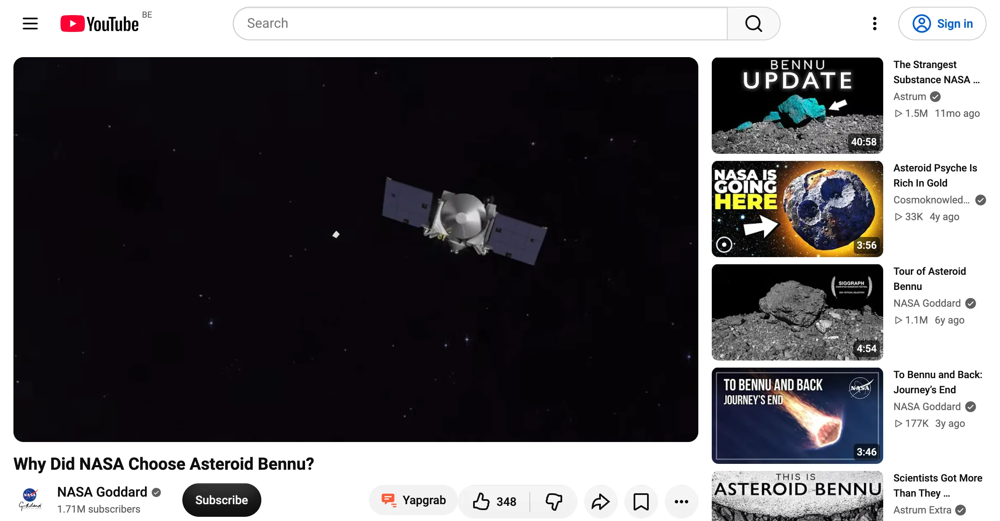
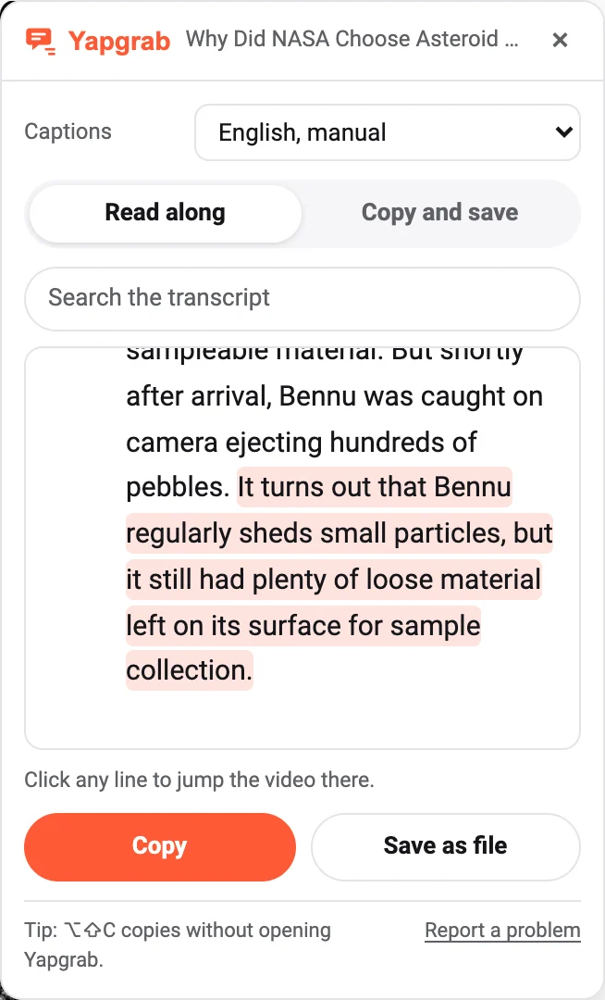
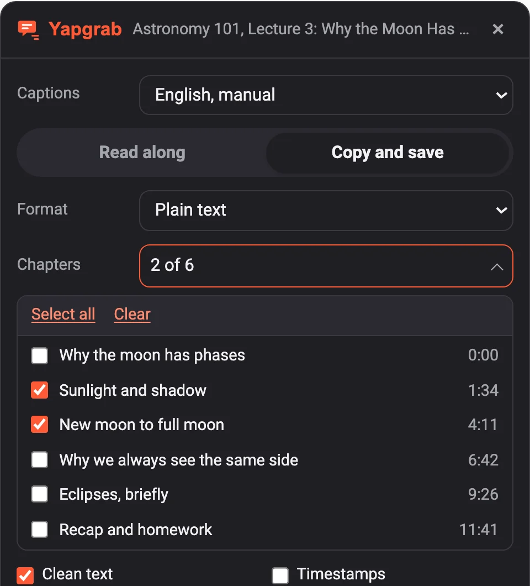

Ask an AI
Paste clean paragraphs into ChatGPT, Claude or any other AI tool, without the caption clutter.
Yapgrab is a Chrome extension that turns YouTube's messy captions into clean, readable paragraphs. One click, right in your browser. No account, no tracking.
Yapgrab is free and launches in December 2026. It works in Chrome on your computer, not on phones. The waitlist is for Yapgrab Pro, which comes later.
WHY MOST VIDEO NOTES NEVER GET USED
So you've just watched a great talk. You nodded along, you even paused it to write something down. And a week later, you cannot remember a single thing it said. That's not a memory problem. It's a capture problem. Video is great for watching and terrible for finding things again.
Flip the switch to see the before and after.


Where the words go
Paste clean paragraphs into ChatGPT, Claude or any other AI tool, without the caption clutter.
Markdown with the title, channel, link and date, ready for Obsidian or Notion.
Switch on timestamps to find every line again in the video.
.txt.md.srt.vtt.json
The small things
Pick the caption track and the chapters you want. Yapgrab keeps the original timestamps and marks a partial export as partial. Works on YouTube videos and Shorts.
New Export several videos
Pick a course playlist, a channel's latest talks or your open tabs. Yapgrab reads them one at a time, only while its side panel is open.
Illustration: five videos from a channel go from Waiting to Reading to Saved, one at a time, and a ZIP fills with one Markdown file per video, plus index.md and manifest.json.
Free and Pro
Everything above is free, and stays free. Pro is not on sale yet, so there is nothing to buy today.
Everything on this page.
No account, no sign-up.
Bigger exports, and more places to send them. About the price of a coffee a month.
The form opens on Tally. The privacy policy says what it collects.
Nothing else
Yapgrab reads captions that already exist and hands you the text. That is the whole job.
Transcripts never leave your browser. This page loads no trackers either. Read the privacy policy.
No sign-up, and no paywall for the basics.
Yapgrab only works with caption text.
If a video has no captions, Yapgrab says so. You get what was said, not a rewrite of it.
Questions
In December 2026, in the Chrome Web Store, in time for Christmas. It will be free to install.
Yapgrab works in Chrome (version 116 or newer) on a computer: Windows, Mac, Linux or ChromeOS. Phones don't run Chrome extensions. Other Chromium browsers, like Edge and Brave, can install Chrome extensions, but we only test in Chrome for now.
Three. YouTube, to read the captions of the video you open and show the Yapgrab button. Chrome describes this as "read and change your data on youtube.com"; Yapgrab only adds its button and panel and reads captions. Storage, to remember your settings on your computer. Side panel, for exporting several videos. It cannot see any other website.
No ads, ever. Yapgrab checks a small signed settings file from this website so we can switch off a broken feature or show a short notice. That notice is plain text of up to 280 characters, inside Yapgrab's own panel, with no links or images, and only about Yapgrab itself. The privacy policy has the details.
About the price of a coffee a month, and we plan to give part of it to a good cause. Everything that is free now stays free.
Without captions there is nothing to read, and Yapgrab says so. If YouTube changes its pages and something breaks, Yapgrab shows a clear message, the status page says what we know, and we fix it.
Kris Vandenberk, at SUIIUS bv in Lommel, Belgium. Questions or ideas? Send an email.
Yapgrab itself is free. Want 300-video exports when Pro arrives? Join the Pro waitlist.
Join the waitlist